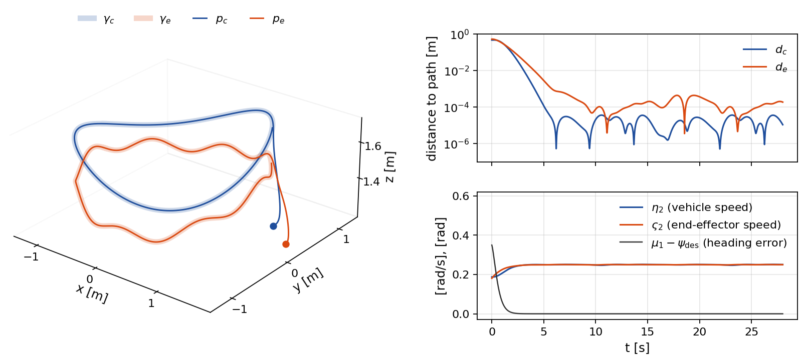
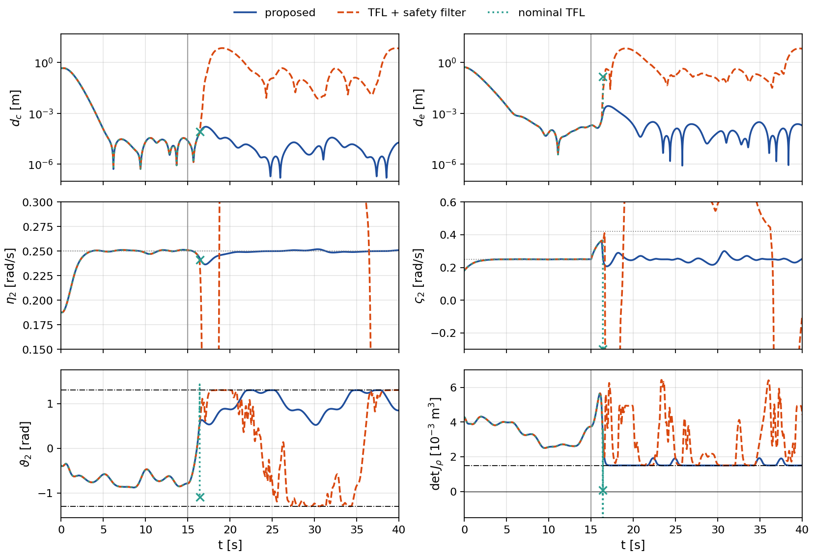
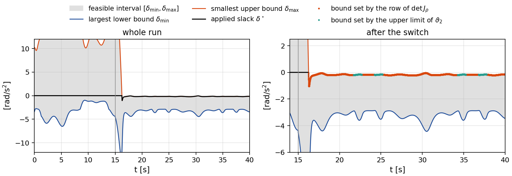
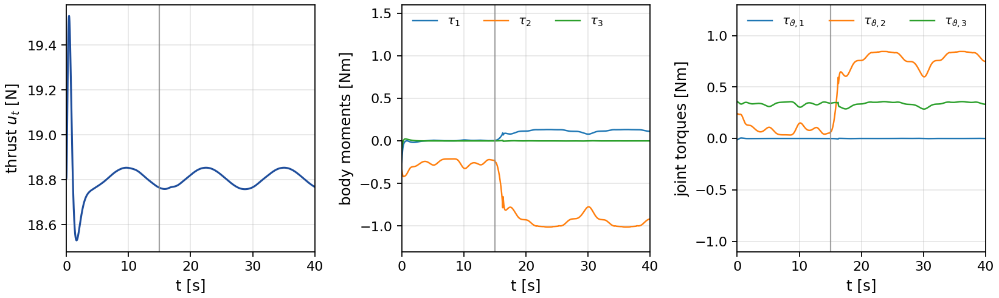
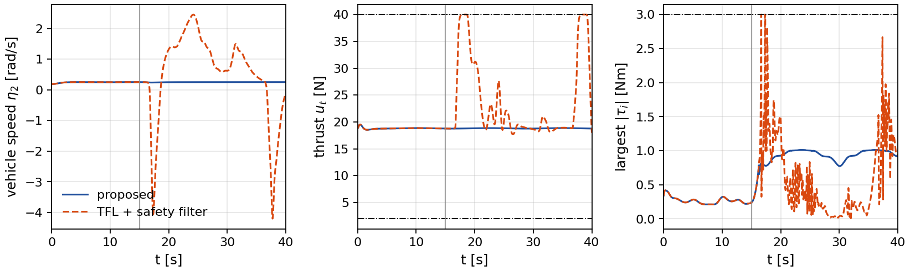
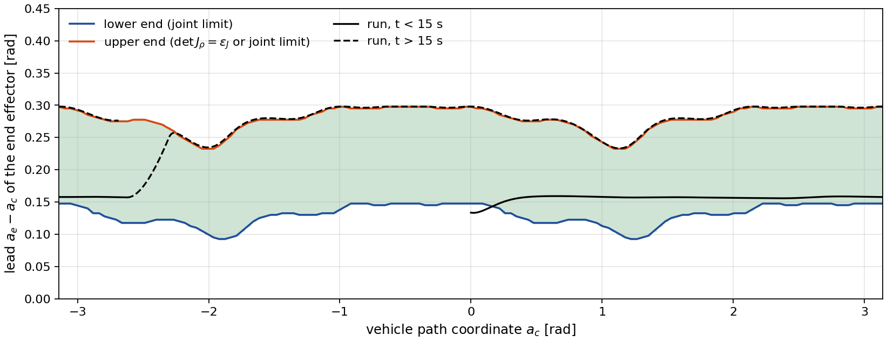
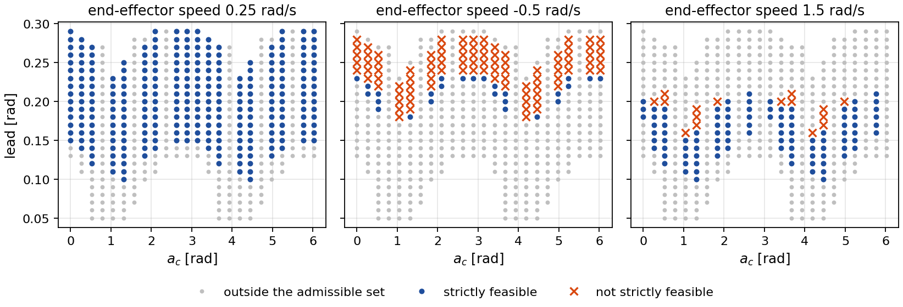
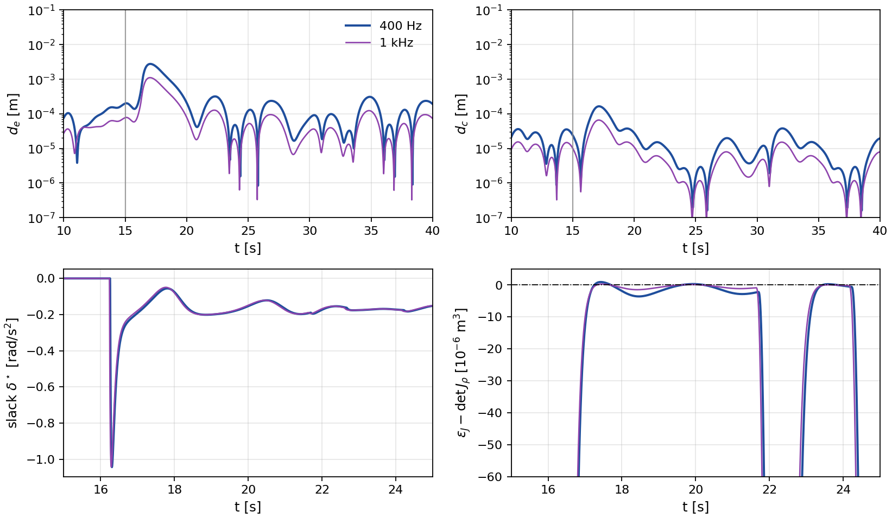
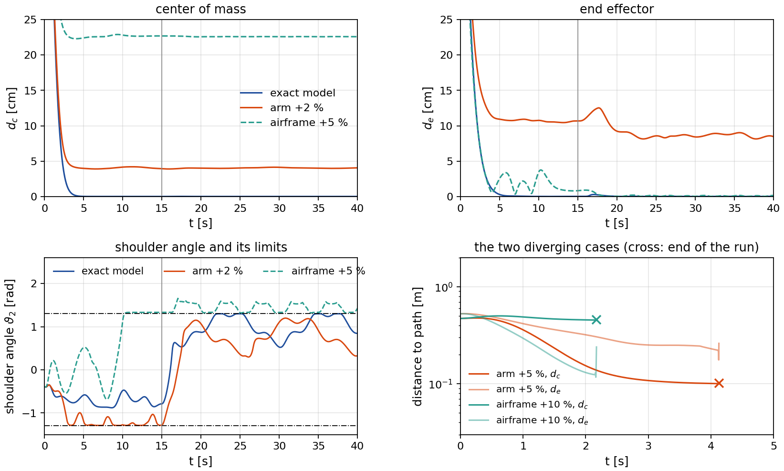

Dual Path Following for an Aerial Manipulator Under State and Input Constraints via Transverse Feedback Linearization
A quadrotor carries a 3-DOF arm. The center of mass of the combined system must follow one path and the end effector must follow a second path. The controller keeps both paths as hard constraints and gives up only the speed of the end effector along its path. This page carries the animations behind the figures of the paper, the complete controller settings, a run at 1 kHz, a study of the postures compatible with both paths, a study of model mismatch, and everything needed to reproduce them.
Incompatible speed references, resolved through the end-effector speed
Rendered in Drake from the logged run. A Skydio X2 carries an OpenMANIPULATOR-X arm mounted upside down below the airframe. The blue dots are the vehicle path of the center of mass and the red dots are the end-effector path. Both points start off their paths. At t = 15 s the end-effector speed reference is raised from 0.25 to 0.42 rad/s while the vehicle speed reference is unchanged. The arm stretches until the singularity barrier becomes active at t = 16.26 s. From then on the end effector is slowed back to the vehicle speed and both points stay on their paths.
The nominal run
Equal speed references of 0.25 rad/s on both paths, from the same off-path start. No constraint becomes active, so the controller applies the transverse feedback linearizing input unchanged.
The nominal run
The vehicle path is a horizontal circle of radius 1.2 m with a wavy altitude \(z = 1.6 + 0.1\sin 2\lambda\), with \(\lambda\) the polar angle. The end-effector path is the circle of the same radius below it with a finer scalloped altitude \(z = 1.42 + 0.06\sin(2\lambda + 0.8) + 0.03\sin 8\lambda\). Speeds are rates of the polar angle, and 0.25 rad/s is 0.3 m/s. The run starts 0.4 m outside and 0.25 m below the vehicle path with a heading error of 0.35 rad. The distances \(d_c\) and \(d_e\) are measured to the points of the paths at the same polar angle, which bounds the distances to the paths from above.

From \(d_c(0) = 0.47\) m and \(d_e(0) = 0.53\) m both distances decay exponentially and fall below 1 mm after 5.8 s. For the rest of the 28 s run, \(d_c\) stays below 0.036 mm and \(d_e\) below 1.00 mm. These residuals come from the zero-order hold of the controller at 400 Hz, since in continuous time the hard rows keep the transverse coordinates at zero. The speeds settle in [0.247, 0.251] and [0.249, 0.251] rad/s after 6 s, and the heading error stays below 1.2×10-5 rad after 10 s. The thrust stays within [18.53, 19.53] N and the tilt below 2.7 degrees.
Incompatible speed references
The same start and gains. At t = 15 s the end-effector speed reference is raised to 0.42 rad/s. The arm cannot sustain a lead that grows without bound, so the nominal controller stretches it into a singular posture. The proposed controller keeps the four transverse rows, the vehicle speed row and the heading row as equalities and relaxes only the end-effector speed row by a scalar slack \(\delta\). The reduced program is a scalar quadratic program over an interval, solved in closed form.

Before the switch no row is active and \(\delta^\star = 0\), so the three controllers coincide. The applied inputs of the nominal controller and the proposed controller are identical to the last digit before the switch, and those of the cascade differ from them by at most 2.4×10-5, which is the tolerance of its numerical solver.
With the proposed controller the singularity row becomes active at t = 16.26 s and the end-effector speed is relaxed back to the vehicle speed. The largest slack is 1.04 rad/s2. From then on some row is active at every step, the singularity row at 84 % of the steps and the upper limit row of \(\vartheta_2\) at the rest, so the closed loop moves along the constraint boundary. The barrier holds up to a residual of 2.8×10-6 m3 in \(\det J_\rho\), and after t = 20 s the value of \(\det J_\rho\) stays below 0.00192 m3, close to \(\epsilon_J = 0.0015\) m3. The distance \(d_e\) peaks at 2.8 mm during the activation and \(d_c\) at 0.16 mm. After t = 20 s they stay below 0.32 mm and 0.04 mm.
After t = 20 s the end-effector speed has mean 0.250 rad/s and ranges over [0.216, 0.300] rad/s. It oscillates at about 0.34 Hz, close to the 0.32 Hz at which the eight scallops of the end-effector path pass, so the oscillation follows the path geometry and not the sampling. The vehicle speed ranges over [0.236, 0.252] rad/s. Its dip is the sampled-data error of the fast arm motion. The heading error stays below 6.2×10-5 rad.


Against a cascade and the nominal controller
The cascade passes the nominal transverse feedback linearizing input through a safety filter with the same barrier and actuator rows. The filter minimizes the distance to the nominal input with an identity weight, so it may change every row of the linearizing equations, including the transverse rows. The nominal controller has no constraints at all. Gains, barrier poles, limits, initial condition and controller rate are identical across the three.
Proposed
The conflict is absorbed by the end-effector speed alone.
TFL + safety filter
Nothing pins the transverse rows. The end effector leaves its path by 5 cm within 0.25 s of the activation and the vehicle within 0.70 s.
Nominal TFL
The arm stretches until \(\det J_\rho\) crosses zero at t = 16.39 s. There the decoupling matrix is singular and the simulation diverges.

| Proposed controller, incompatible-speed run | 400 Hz | 1 kHz |
|---|---|---|
| Singularity row first active [s] | 16.26 | 16.24 |
| Largest slack \(|\delta^\star|\) [rad/s2] | 1.04 | 1.04 |
| Steps with an active row after the activation | 100 % | 100 % |
| Share of the singularity row among them | 84 % | 84 % |
| Largest \(\epsilon_J - \det J_\rho\) [m3] | 2.8×10-6 | 1.1×10-6 |
| Peak \(d_e\) after the switch [mm] | 2.76 | 1.11 |
| Peak \(d_c\) after the switch [mm] | 0.16 | 0.07 |
| \(d_e\) after 20 s [mm] | < 0.32 | < 0.13 |
| \(d_c\) after 20 s [mm] | < 0.04 | < 0.02 |
| End-effector speed after 20 s, mean [rad/s] | 0.250 | 0.250 |
| End-effector speed after 20 s, range [rad/s] | [0.216, 0.300] | [0.215, 0.299] |
| Vehicle speed after the switch [rad/s] | [0.236, 0.252] | [0.245, 0.251] |
| Heading error after 10 s [rad] | < 6.2×10-5 | < 2.4×10-5 |
| Thrust after the switch [N] | [18.76, 18.85] | [18.76, 18.85] |
| Largest body moment [Nm] | 1.01 | 1.01 |
| Largest joint torque [Nm] | 0.85 | 0.85 |
| Feasible interval width, before and after the switch [rad/s2] | ≥ 11.1, ≥ 2.6 | ≥ 11.5, ≥ 2.6 |
| Steps with an infeasible program | 0 | 0 |
The 1 kHz run gives the same activation time within 0.02 s, the same largest slack, and residuals smaller by a factor of 2.5. The 1 kHz run is below.
| Safety-filtered cascade | Value |
|---|---|
| End effector more than 5 cm off its path, after the activation | 0.25 s |
| Vehicle more than 5 cm off its path, after the activation | 0.70 s |
| Vehicle speed reversal | -4.2 rad/s at t = 37.7 s |
| Largest thrust | 40.0 N (bound 40 N) |
| Largest body moments | (2.67, 3.00, 1.00) Nm (bounds 3, 3, 1 Nm) |
| Largest joint torque | 2.70 Nm |
| Closest return of the center of mass to its path after leaving | 7.4 mm |
| Closest return of the end effector to its path after leaving | 27.3 mm |
| Joint limits exceeded by up to | 0.0023 rad |
| Nominal controller | |
| \(\det J_\rho\) crosses zero at | 16.39 s |
| \(\vartheta_3\) at the first sample after the crossing | -1.42 rad (elbow singularity at -1.38 rad) |
| Run ends at | 16.41 s |
Feasibility margins
The reduced program is feasible exactly when every row with a zero coefficient on the slack holds at the nominal input and the largest lower bound does not exceed the smallest upper bound. One pass through the 25 rows gives this test and the interval. The six vehicle rows, four attitude rows and two thrust rows, have a zero coefficient on the slack, because the slack acts through the arm only.
The attitude margin is the smallest value of \(-\bar b_i\) over the six vehicle rows logged at every step. The thrust margin is rebuilt from the logged thrust, its rate and the applied thrust input, since the slack leaves the thrust input unchanged. On the nominal motion of the posture study below, the same margins are 146 rad/s2 and 1676 N/s2, and the coefficient of the slack in the vehicle rows is at most 7.5×10-15.
Postures compatible with both paths
On the dual path-following manifold the posture of the arm is a function of the vehicle path coordinate \(a_c\) and of the lead \(a_e - a_c\) of the end effector along the circle. The arm reaches only a bounded set of end-effector positions relative to the center of mass, so only an interval of leads is admissible at each \(a_c\). Two studies map this interval and test strict feasibility on it.


| Singular postures of the arm (from the multibody model) | Value |
|---|---|
| Elbow angle \(\vartheta_3^*\) with \(\det J_\rho = 0\) for every \(\vartheta_2\) | -1.38 rad (spread over three values of \(\vartheta_2\): 7.7×10-13) |
| Distance of the elbow limit -1.3 rad to this singularity | 0.08 rad |
| Shoulder angle with \(\bar\rho_x = 0\) at \(\vartheta_3 = 0.1\) rad | -1.27 rad, inside the joint box |
| Airframe mass and mass of the combined system | 1.325 kg and 1.917 kg |
| Offset of the center of mass from the body origin, incompatible-speed run | 1.2 to 5.6 cm |
Controller rate
The controller runs at 400 Hz with a zero-order hold on the body-frame command, and the plant is integrated at 4 kHz with a third-order Runge–Kutta scheme. The runs are therefore sampled approximations of the continuous-time controller. The same incompatible-speed run at 1 kHz shows what the sampling costs.

Model mismatch
The controller computes the drift of every row from the model, so a model error moves the closed loop off the paths. In these runs the masses and inertias of the simulated plant are scaled while the controller keeps the nominal model. The incompatible-speed scenario is unchanged.

| Plant scaled against the model | Arm +2 % | Airframe +5 % | Arm +5 % | Airframe +10 % |
|---|---|---|---|---|
| Run length [s] | 40.0 | 40.0 | 4.1 (diverges) | 2.2 (diverges) |
| Program feasible at every step | yes | no | no | no |
| First infeasible step [s] | n/a | 16.27 | 1.74 | 0.78 |
| Share of infeasible steps after the switch | 0 % | 64 % | n/a | n/a |
| Largest \(\epsilon_J - \det J_\rho\) [m3] | 2.0×10-5 | 6.9×10-4 | 0.003 | 0.003 |
| Joint limits exceeded by up to [rad] | 0 | 0.36 | 3.9 | diverges |
| \(d_c\) after 20 s [cm] | [4.0, 4.1] | [22.6, 22.6] | n/a | n/a |
| \(d_e\) after 20 s [cm] | [8.1, 9.2] | [0.00, 0.19] | n/a | n/a |
| \(d_e\) between 10 and 15 s [cm] | [10.4, 10.8] | [0.79, 3.75] | n/a | n/a |
| Peak \(d_e\) after the switch [cm] | 12.5 | 0.9 | n/a | n/a |
| Largest vehicle speed error after 10 s [rad/s] | 0.10 | 0.35 | n/a | n/a |
With the arm 2 % heavier the run stays feasible and the barriers hold, but the center of mass settles 4 cm off its path. The end effector settles 10 to 11 cm off its path before the switch and 8 to 9 cm after 20 s, with a peak of 12.5 cm after the switch. With the airframe 5 % heavier the program becomes infeasible after the switch, the fallback takes over and the joint limits are exceeded by up to 0.36 rad. The two larger errors make the run diverge within the initial transient, before the switch. Hardware will therefore need integral action or an estimate of the acceleration of the center of mass.
Every parameter, for all three controllers
The comparison is only worth reading if the three controllers were given the same problem. These are the complete settings behind every figure on this page.
Plant and scenario
| Parameter | Value |
|---|---|
| Platform | Skydio X2 airframe (MuJoCo Menagerie inertial data) with an OpenMANIPULATOR-X arm (ROBOTIS description file), wrist fixed, mounted upside down below the airframe |
| Masses | airframe 1.325 kg, combined system 1.917 kg |
| Engine | Drake MultibodyPlant, continuous, third-order Runge–Kutta at 4 kHz (fixed step 0.25 ms) |
| Controller rate | 400 Hz, zero-order hold on the body-frame command, thrust chain integrated exactly between updates |
| Gravity | 9.81 m/s2 |
| Vehicle path | x2 + y2 = 1.22, z = 1.6 + 0.1 sin 2λ, path coordinate λ = atan2(y, x) |
| End-effector path | same circle, z = 1.42 + 0.06 sin(2λ + 0.8) + 0.03 sin 8λ |
| Heading reference | ψdes = λ + π/2, the tangent direction, with the error wrapped to (−π, π] |
| Speed references | vc = ve = 0.25 rad/s (0.3 m/s). Incompatible-speed run: ve = 0.42 rad/s from t = 15 s |
| Start | center of mass 0.4 m outside and 0.25 m below the vehicle path at λ = 0, moving at 0.3 m/s along the circle, heading error 0.35 rad, level attitude, hover thrust, end effector at its on-path lead of 0.183 rad plus a 5 cm radial and 4 cm vertical perturbation |
| Horizon | 28 s (nominal run), 40 s (incompatible-speed runs) |
Proposed controller
| Parameter | Value |
|---|---|
| Transverse gains kξ = kζ | (81, 108, 54, 12), quadruple pole at −3 |
| End-effector transverse gains kχ = kσ | (2.25, 3.00), double pole at −1.5 |
| Vehicle speed gains kη | (8, 12, 6), triple pole at −2 |
| End-effector speed gain kς | 1, pole at −1 |
| Heading gains kμ | (9, 6), double pole at −3 |
| ECBF gains (k1, k2) | (100, 20), double pole at −10 for every barrier |
| Joint limits [rad] | ϑ1 ∈ [-1.5, 1.5], ϑ2 ∈ [-1.3, 1.3], ϑ3 ∈ [-1.3, 1.2] (the simulated plant does not enforce them) |
| Attitude margin | |φ|, |θ| ≤ π/2 − 0.1 rad |
| Thrust bounds | 2 N ≤ ut ≤ 40 N |
| Actuator bounds | |τ| ≤ (3, 3, 1) Nm, |τϑ| ≤ 3 Nm, as box rows on the input |
| Singularity margin | det Jρ ≥ εJ = 0.0015 m3 |
| Rows | 25: six joint, four attitude, two thrust and one singularity ECBF rows, twelve actuator box rows |
| Objective and solve | ½δ2 over the scalar slack of the end-effector speed row, interval test and closed-form clipping, no numerical solver in the loop |
| Fallback | if the interval is empty, the nominal input with both speed references set to zero (never reached with the exact model) |
| Model knowledge | det Jρ, inertia matrix, bias forces and Jacobians from the multibody model, exact |
TFL with a safety filter (cascade)
| Parameter | Value |
|---|---|
| Nominal feedback | the same transverse feedback linearizing input |
| Filter | min ½‖u − uTFL‖2 subject to the same 25 rows, identity weight |
| Solve | CLARABEL through cvxpy |
| Difference from the proposed controller | every row of D(x)u = v(x) may change, so the transverse rows are not pinned |
Nominal controller
| Parameter | Value |
|---|---|
| Feedback | u = D(x)−1 v(x), no constraints |
Reproducing this
The simulation code is in the repository under sim/. The verification gate runs first. It checks
the symbolic model against energy conservation, the center-of-mass identity and a Drake cross-check, and the
closed form of the decoupling matrix determinant against direct evaluation at random states.
# set up and verify
git clone https://github.com/gradslab/am_dual_pf-.git
cd am_dual_pf/sim
pip install -r requirements.txt
python3 model/verify_model.py
python3 model/test_relative_degree.py
# the runs behind every number and figure
python3 drake/sim_drake.py D3
python3 drake/sim_drake.py D4 --modes relaxed,filter,nominal
python3 drake/sim_drake.py D4 --modes relaxed --hz 1000 --tag _1khz
python3 drake/sim_drake.py D5 --arm-scale 1.02 --tag _a102
python3 drake/sim_drake.py D5 --veh-scale 1.05 --tag _v105
python3 drake/sim_drake.py D5 --arm-scale 1.05 --T 12 --tag _a105
python3 drake/sim_drake.py D5 --veh-scale 1.10 --T 12 --tag _v110
# the posture study, the numbers and the figures
python3 studies/posture_study.py
python3 metrics.py
python3 paper_figures.py
python3 web/figs_web.py
# animations (Drake VTK renderer and ffmpeg), then the page
for s in "D4_relaxed side" "D4_relaxed orbit" "D3_nominal orbit" "D3_nominal side" \
"D4_filter side" "D4_filter orbit" "D4_nominal side"; do
set -- $s; python3 drake/render_drake.py $1 --cam $2
done
python3 web/anim_web.py
python3 web/page_numbers.py
python3 web/build_page.pyCitation
@unpublished{tariq2026dual,
author = {Hamza Tariq and Adeel Akhtar},
title = {Dual Path Following for an Aerial Manipulator Under State and
Input Constraints via Transverse Feedback Linearization},
note = {Under review},
year = {2026}
}